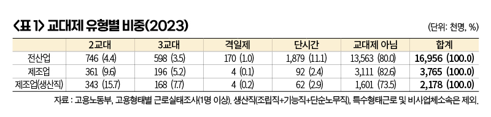
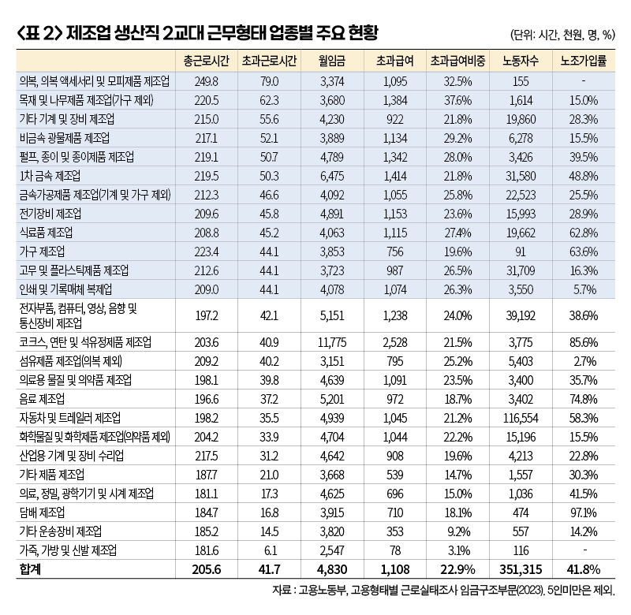

박영삼의 통계로 보는 노동
제조 업종별 주야 2교대 현황 살펴보니 … ‘식품·철강·고무·제지’ 다수 업종 광범위 분포
이재명 정부의 초기 노동정책에서 산업안전 문제가 핵심 이슈로 자리매김하고 있다. 이재명 대통령이 취임 후 노동문제와 관련한 첫 방문지로 선택한 곳이 산재 사망사고가 되풀이돼온 SPC그룹 시화공장이었고, 대통령과 관련 부처 장관들의 토론 과정이 공개된 29일 국무회의 안건도 ’산업안전’이 주제였다.
마침 28일 국회 환경노동위원회를 통과한 노동조합 및 노동관계조정법(개정안)도 원청 사업주가 실질적인 지배력을 행사한 경우 사용자 책임을 요구할 수 있도록 하고 있는데, 지금까지 대법원 판례 흐름을 보면 산업안전 분야가 우선 교섭의제로 등장할 가능성이 매우 높다.
SPC 시화공장에서 대통령이 직접 주재했던 현장 간담회에서는 그동안 발생했던 3건의 사망사고가 모두 주야간 2교대 사업장이었고, 심야작업 도중에 사고를 당했다는 점이 중요하게 부각됐다. 그동안 제빵공장의 공정 특성에 따른 안전설비 미비와 사쪽의 미온적 대책 등이 주된 문제로 지목돼 왔다면, 이번에는 장시간 야간노동을 불러온 12시간 맞교대 문제가 핵심 개선과제로 등장했다는 점에서 제조업 전반에 상당한 파장을 미칠 것으로 보인다.
주야 12시간 교대 ‘제조업 전반 문제’
SPC그룹의 경우 2조2교대와 3조2교대 형태로 공장을 운영해 왔다. 전자는 2개조가 주야 맞교대로 5일을 근무한 뒤 이틀을 함께 쉬는 방식이고 후자는 2개조가 주야간을 이어서 근무하는 동안 나머지 1개조가 휴식을 하고 근무조를 순차적으로 번갈아 교대하는 방식이다. 공통적인 것은 한 개 근무조의 근무시간이 12시간으로 장시간 노동을 한다는 점이고 새벽까지 작업이 이어진다는 점이다. 그런데 이 같은 2교대제 방식은 제조업에서 가장 비중이 높은 교대제 형태다.
고용노동부의 고용형태별 근로실태조사(2023년 6월 기준)에서 전국의 1명 이상 사업체 소속 1천695만6천명의 임금노동자 가운데 교대제로 근무하고 있는 노동자는 151만4천명으로 8.9%를 차지한다. 이 가운데 2교대 방식으로 일하는 노동자는 74만6천명으로 전체의 4.4% 비중을 차지한다. 하지만 제조업만 놓고 보면 2교대 근무가 36만1천명으로 9.6%를 차지하며 기능직과 조립직·단순노무직 등 생산직으로 범위를 좁히면 15.7%가 2교대 근무형태로 일하고 있다.
2교대 근무자의 절반에 가까운 48.4%가 제조업에 속해 있고, 그중 생산직이 34만3천명으로 2교대 근무자의 94.8%를 차지한다. 이 통계가 작성된 2008년 이후 전 산업의 2교대 비중은 6.1%에서 4.4%로 줄었지만 제조업 생산직은 2008년 15.4%였던 것이 2023년에도 여전히 15.7% 수준을 유지하고 있다.

제조업 생산직 2교대 노동자 35만명, 저임금~고임금 다양한 분포
제조업의 2교대 현황을 업종별로 확인하려면 산업중분류 코드가 제공되는 5명 이상 사업장 임금구조기본통계조사 자료를 이용해야 한다. 제조업의 2교대 생산직 노동자를 25개 업종별로 정리한 것이 <표 2>다.
2023년 6월 기준 제조업에서 2교대로 근무하는 생산직 노동자는 총 35만명 규모로 확인된다. 이들의 월 평균 근로시간은 205.6시간, 초과근로시간은 평균 41.7시간으로 나타났다. 월 평균 임금은 483만원이며 이 중 초과급여가 111만원으로 총임금의 22.9%를 차지한다. 표에서 음영으로 표시한 영역은 총근로시간과 초과근로시간 모두 제조업 평균을 초과하는 경우로, 이 업종은 ’주야 12시간 교대제’로 운영되고 있다고 잠정 분류한 것이다.
예를 들어 SPC그룹이 속한 ’식료품 제조업’은 월 초과근로시간이 44시간을 넘는데 이럴 경우 주당 연장근로시간이 10시간(44×12÷52=10.15)을 넘게 된다. 주 4일 교대근무에서 4일로 나눈 2.5시간씩 연장근로를 할 경우 소정근로 8시간을 포함해서 10.5시간을 일하게 된다. 이때 4시간에 30분씩 휴게시간을 2회 이상 부여해야 하므로 근로시간과 휴게시간 합계가 11.5시간이 돼어 12시간을 모두 채우게 된다. 이렇게 되면 주야 12시간 교대제로 운영하는 것으로 판단할 수 있는 것이다.
반면 ’자동차트레일러제조업’의 경우 월 근로시간이 200시간에 못 미치고 초과근로시간도 40시간에 미달해서 심야근로가 없는 2교대 형태로 운영할 수 있는 여지가 있다. 여기에서 현대자동차가 노사합의로 도입한 ’주간연속 2교대(8+8)’의 영향이 나타난다고 볼 수 있다. 담배제조업과 기타운송장비(조선) 등도 월 근로시간이 180시간대로 주야 2교대가 아니라 주간 2교대에 훨씬 가깝다.

이런 방법으로 음영으로 표시한 영역의 업종들이 12시간 2교대 근무로 간주할 수 있는 업종들이다. 이 가운데 평균임금이 낮은 고무업·식품업·금속가공업·유리광물업·의류업은 ‘저임금·장시간 노동’ 업종으로 분류할 수 있다. 반대로 철강업·제지업 등은 임금수준이 높으면서도 장시간 노동의 2교대 근무체계를 선택한 ‘고임금·장시간 노동’ 업종으로 분류할 수 있다. 저임금·장시간 노동 업종은 초과급여 감소를 보전할 수 있는 임금대책이 필요하지만, 고임금·장시간 노동 업종의 경우 그런 제약조건이 약하다고 할 수 있다.
노조법 개정도 ’노동자 안전 보장’의 좋은 발판
이런 측면에서 노조조직률도 살펴볼 필요가 있다. 식품업은 노조조직률이 높은데도 저임금의 장시간 노동 상태가 지속돼 왔고, 인쇄업과 섬유업·화학물질제조업은 조직률이 낮은 위험군에 속한다. 철강업(1차 금속제조업)은 조직률이 높고 임금수준도 매우 높은 ‘고임금·장시간 노동’ 업종이다. 그동안 철강산업에서 중대재해가 발생할 때마다 사내하청 노동자들이 주된 희생자가 돼 왔는데, 위험한 장시간 근무체계는 원청의 것을 적용받으면서 임금과 노동조건은 물론 산업안전에 관해서도 아무런 목소리를 낼 수 없었다.
그런 점에서 노동자의 생명과 안전을 중시하는 정책이 적극적으로 추진되고, 원청을 비롯한 실질적 사용자를 대상으로 노조가 교섭을 요구할 수 있는 계기가 마련되고 있는 것은 시사하는 바가 적지 않다. 노동자의 ‘생명과 안전’의 문제를 놓고 ‘단결하고 요구하고 행동할 수 있는’ 발판이 만들어지고 있기 때문이다.
고려대 노동문제연구소 노동데이터센터장 (youngsampk@gmail.com)